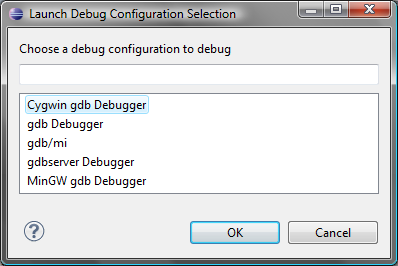

Compiling and Debugging FORTE with Eclipse
Get C/C++ support for Eclipse
- If you do not already use Eclipse to run 4DIAC-IDE from source, download the Eclipse for C/C++ Developers and unzip the file to a suitable location (e.g., c:\eclipse). Otherwise you can integrate C/C++ functionality into your existing Eclipse by Help → Install New Software, choosing your Eclipse version and checking Programming Languages/C/C++ Development Tools.

- Run eclipse.exe
- Choose a workspace directory, this will be the directory where your C/C++ project will be located (see below on how to add FORTE). It is recommended to set the workspace folder one level above the entire source code folder. Please avoid any spaces in its names. Otherwise you might get problems when compiling FORTE.
Compile FORTE with Eclipse
- Import FORTE by File → Import → General → Existing Project into Workspace. In case your Workspace is one folder above your source code folder you only have to click on Browse... and OK afterwards to import FORTE into Eclipse. Otherwise select the directory where you have extracted your FORTE and check copy into workspace (otherwise the source will stay at the original place).
- Start Make Targets View by Window → Show View → Make Targets if it is not open already and choose the makefile: bin/posix/all to generate the object files for the existing Function Blocks and compile FORTE to a executable application.

Debug FORTE with Eclipse
For the debugging of self developed Function Blocks run through the following steps:
- set a breakpoint in the source code file of the desired Function Block
- start FORTE in Eclipse Debug mode
- choose your desired debugger. In case you use Cygwin choose Cygwin gdb Debugger in the debug configuration window shown in the following figure. If you use MinGW choose MinGW gdb Debugger

- confirm for changing into the Debug view
- press the Locate File button (see figure below) and navigate to the Eclipse workspace which contains the extracted FORTE, type main into the search field of the Windows Explorer and select the offered main.cpp. FORTE is now stopped at the main() function.

- Press the Resume button to run FORTE and observe the behavior of our application.
- Always press the Terminate button for stopping a FORTE launched within Eclipse. This avoids FORTE running in the background (not always shown in Task Manager).